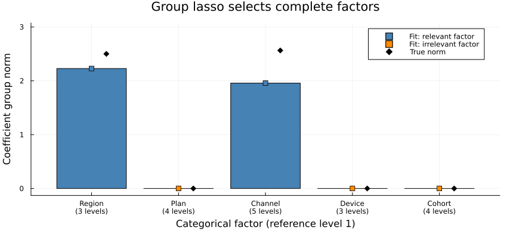

Categorical factor selection
A categorical predictor, such as a subscription plan, usually needs several dummy columns in a regression. Ordinary least squares keeps all those columns; ordinary lasso can select individual level contrasts. If our question is instead which complete factors matter?, group lasso can remove all the contrasts of a factor together.
Here five simulated factors explain a continuous response. Only Region and Channel affect its conditional mean. We fit one group per factor, then compare the fitted group norms with the known truth. The example uses existing dense least-squares group lasso, not a formula interface or a new categorical-data solver.

Bars and squares show the fitted group norms. Diamonds show the true norms, shifted slightly to the right so both marks remain visible at zero. Blue denotes relevant factors and orange denotes irrelevant factors in the simulation.
using LinearAlgebra, Random
using ProximalBase, ProximalSolversReference coding and the model
Factor j has mⱼ levels, numbered 1 through mⱼ. Level 1 is the reference: its row is all zeros; level ℓ > 1 has a one in column ℓ − 1. A coefficient is thus a difference from the reference level, holding other factors fixed. We omit one column per factor to avoid the exact dependence between a full set of dummies and the intercept.
The encoder below needs only Julia arrays. Its groups are disjoint and cover every column.
function reference_encode(levels, nlevels)
n, q = size(levels)
@assert q == length(nlevels) && all(m -> m >= 2, nlevels)
@assert all(1 <= levels[i, j] <= nlevels[j] for i in 1:n, j in 1:q)
groups = Vector{Vector{Int}}()
D = zeros(Float64, n, sum(nlevels .- 1))
offset = 0
for j in 1:q
push!(groups, collect(offset .+ (1:(nlevels[j] - 1))))
for i in 1:n
ell = levels[i, j]
ell > 1 && (D[i, offset + ell - 1] = 1.0)
end
offset += nlevels[j] - 1
end
D, groups
end
colmeans(A) = vec(sum(A, dims = 1)) / size(A, 1)colmeans (generic function with 1 method)We simulate independent, uniformly distributed factors, an additive mean, and independent Gaussian errors with standard deviation 0.6. Every level occurs in this seeded sample. The intercept 2.0 is the mean response when all factors are at their reference levels.
rng = Xoshiro(410)
n = 200
factor_names = ["Region", "Plan", "Channel", "Device", "Cohort"]
nlevels = [3, 4, 5, 3, 4]
levels = hcat([rand(rng, 1:m, n) for m in nlevels]...)
D, groups = reference_encode(levels, nlevels)
p = size(D, 2)
beta_true = zeros(p)
beta_true[groups[1]] = [2.0, -1.5]
beta_true[groups[3]] = [1.8, -1.3, 1.0, -0.8]
true_relevant = [any(!iszero, beta_true[G]) for G in groups]
a_true, sigma = 2.0, 0.6
y = a_true .+ D * beta_true + sigma * randn(rng, n)200-element Vector{Float64}:
4.778401968250595
0.9509306269774846
1.8953531563625396
0.408275242782542
-0.20468663159856704
4.568811662616598
1.8087209688459644
0.5781851350237139
1.2861983486083342
-0.41314877722696464
⋮
4.156560338455733
2.4183010991877456
2.3672444310967733
4.8535960852943285
0.20127558989684707
1.9311912882150437
2.560820874527043
-0.8116310302500415
3.369950999824582For the model y = a + Dβ + error, the least-squares intercept at any fixed β is a = ȳ − d̄ᵀβ. Centering gives Z = D − 1d̄ᵀ and z = y − ȳ, so profiling out this unpenalized intercept yields the convex objective
\[\min_\beta\; \frac{1}{2n}\|z-Z\beta\|_2^2 +\lambda\sum_{j=1}^5\sqrt{|G_j|}\,\|\beta_{G_j}\|_2.\]
The group norm couples a factor's contrasts: a zero block removes that complete factor. A selected block can still contain individual zero coefficients. Ordinary lasso instead penalizes each dummy coefficient separately and can retain only some level contrasts.
We do not standardize the dummy columns. The coefficient norms therefore measure reference-level differences in response units. The default weights √|Gⱼ| account for block size, but do not make selection invariant to a different reference, contrast basis, scaling, or level frequencies. Those choices change the penalty and can change the selected factors.
dbar, ybar = colmeans(D), sum(y) / n
Z, z = D .- dbar', y .- ybar
weights = sqrt.(Float64.(length.(groups)))5-element Vector{Float64}:
1.4142135623730951
1.7320508075688772
2.0
1.4142135623730951
1.7320508075688772At β = 0, the loss gradient is −Zᵀz/n. All blocks can remain zero exactly when λ ≥ λmax = maxⱼ ‖Z[:, Gⱼ]ᵀz‖₂ / (n√|Gⱼ|). We use a fixed fraction of this threshold for illustration; it is not a cross-validated choice or a promise of correct selection.
lambda_max(Z, z, groups) = maximum(norm(Z[:, G]' * z) / (size(Z, 1) * sqrt(length(G))) for G in groups)
lambdamax = lambda_max(Z, z, groups)
lambda = 0.12 * lambdamax0.06872917265362881LeastSquaresLoss(z, Z) is half the residual sum of squares, so the multiplier is 1/n. BlockIterate(Float64, p, g) takes exactly the groups of the penalty, in the same order. Cyclic coordinate descent updates a whole block at a time; momentum is disabled here.
function fit_groups(Z, z, groups, lambda)
g = GroupNormL2(lambda, groups)
x = BlockIterate(Float64, size(Z, 2), g)
result = solve!(x, (1 / size(Z, 1)) * LeastSquaresLoss(z, Z), g,
CDSolver(order = :cyclic, momentum = false, tol = 1e-12))
@assert result.minimizer === x
@assert all(collect(blockindices(x, j)) == groups[j] for j in eachindex(groups))
(; x, beta = Vector(x), result)
end
fit = fit_groups(Z, z, groups, lambda)
beta = fit.beta
true_norms = [norm(beta_true[G]) for G in groups]
estimated_norms = [norm(beta[G]) for G in groups]
selected = findall(!iszero, estimated_norms)2-element Vector{Int64}:
1
3Which factors survive?
An estimated norm of zero means every contrast for that factor is zero. In the run shown, Region and Channel are selected, and their fitted norms are smaller than the true norms. Plan, Device and Cohort have zero fitted norms. Plotting runs only in the documentation environment; the standalone script and tests do not load Plots. To reproduce the figure locally, run julia --project=docs docs/make.jl after installing the documentation environment.
using Plots
labels = ["$(factor_names[j])\n($(nlevels[j]) levels)" for j in eachindex(groups)]
relevant = findall(true_relevant)
irrelevant = findall(!, true_relevant)
colors = [active ? :steelblue : :darkorange for active in true_relevant]
fig = bar(eachindex(groups), estimated_norms; color = colors, label = "",
xticks = (eachindex(groups), labels), ylabel = "Coefficient group norm",
xlabel = "Categorical factor (reference level 1)",
title = "Group lasso selects complete factors", size = (850, 420),
ylims = (-0.13, 1.2 * maximum(true_norms)), legend = :topright,
bottom_margin = 6Plots.mm)
scatter!(fig, relevant, estimated_norms[relevant]; marker = :rect, color = :steelblue,
label = "Fit: relevant factor")
scatter!(fig, irrelevant, estimated_norms[irrelevant]; marker = :rect, color = :darkorange,
label = "Fit: irrelevant factor")
scatter!(fig, eachindex(groups) .+ 0.17, true_norms; marker = :diamond, color = :black,
markersize = 5, label = "True norm")
savefig(fig, "categorical_group_selection.svg"); nothing
println("λmax = ", lambdamax, "; λ = 0.12 λmax = ", lambda)
println("factor levels contrasts true relevance fitted norm selected")
for j in eachindex(groups)
println(rpad(factor_names[j], 10), rpad(nlevels[j], 8), rpad(length(groups[j]), 11),
rpad(true_relevant[j], 16), rpad(round(estimated_norms[j], digits = 4), 13), j in selected)
end
println("selected factors: ", factor_names[selected])λmax = 0.5727431054469068; λ = 0.12 λmax = 0.06872917265362881
factor levels contrasts true relevance fitted norm selected
Region 3 2 true 2.2283 true
Plan 4 3 false 0.0 false
Channel 5 4 true 1.9571 true
Device 3 2 false 0.0 false
Cohort 4 3 false 0.0 false
selected factors: ["Region", "Channel"]The table and figure describe this one realization. The assertions require selected and unselected factors, but deliberately do not require perfect recovery of the true factors.
@assert 0 < length(selected) < length(groups)Check the encoding and restore the intercept
We check the dimensions, column partition, and every encoded row. A separate probe visits every possible level of each factor, including the all-zero reference row, so a missing sample level cannot hide an encoding error.
@assert size(D) == (n, sum(nlevels .- 1)) && eltype(D) == Float64
@assert sort(reduce(vcat, groups)) == collect(1:p)
@assert all(length(groups[j]) == nlevels[j] - 1 for j in eachindex(groups))
for j in eachindex(groups)
@assert sort(unique(levels[:, j])) == collect(1:nlevels[j])
@assert D[:, groups[j]] == Float64.([levels[i, j] == ell for i in 1:n, ell in 2:nlevels[j]])
probe, _ = reference_encode(reshape(collect(1:nlevels[j]), :, 1), [nlevels[j]])
@assert all(iszero, probe[1, :])
@assert probe[2:end, :] == Matrix{Float64}(I, nlevels[j] - 1, nlevels[j] - 1)
end
@assert norm(colmeans(Z)) <= 1e-12 && abs(sum(z) / n) <= 1e-12
ahat = ybar - dot(dbar, beta)
fitted = ahat .+ D * beta
@assert norm(fitted - (ybar .+ Z * beta), Inf) <= 1e-12
@assert abs(sum(fitted - y) / n) <= 1e-12 # intercept normal equation
println("reference-level intercept: true = ", a_true, "; estimated = ", ahat)reference-level intercept: true = 2.0; estimated = 2.148719208028875Independent numerical validation
A small change over a coordinate-descent pass (converged) is not an independent optimality certificate. We compute the objective and gradient directly from the data. Write h = Zᵀ(Zβ − z)/n and wⱼ = √|Gⱼ|. At the optimum, the group KKT conditions are
\[h_{G_j} + \lambda w_j\frac{\beta_{G_j}}{\|\beta_{G_j}\|_2}=0 \quad (\beta_{G_j}\ne0),\qquad \|h_{G_j}\|_2\le\lambda w_j\quad (\beta_{G_j}=0).\]
The largest residual below measures violation of these equations and inequalities. A zero residual characterizes a minimizer of this convex objective.
objective(Z, z, b, groups, lambda) =
sum(abs2, Z * b - z) / (2 * size(Z, 1)) +
lambda * sum(sqrt(length(G)) * norm(b[G]) for G in groups)
function group_kkt(Z, z, b, groups, lambda)
grad = Z' * (Z * b - z) / size(Z, 1)
residual = 0.0
for G in groups
bg, hg = b[G], grad[G]
t = lambda * sqrt(length(G))
violation = iszero(norm(bg)) ? max(norm(hg) - t, 0.0) : norm(hg + t * bg / norm(bg))
residual = max(residual, violation)
end
residual
end
obj = objective(Z, z, beta, groups, lambda)
kkt = group_kkt(Z, z, beta, groups, lambda)
@assert all(isfinite, beta)
@assert abs(fit.result.minimum - obj) <= 1e-10 * (1 + abs(obj))
@assert kkt <= 1e-7 * max(1.0, lambdamax)
@assert sort(collect(activecoordinates(fit.x))) == selected
@assert all(isactive(fit.x, j) == (j in selected) for j in eachindex(groups))
original_obj = sum(abs2, fitted - y) / (2n) + lambda * sum(weights .* estimated_norms)
@assert abs(original_obj - obj) <= 1e-12 * (1 + abs(obj))
@assert group_kkt(Z, z, zeros(p), groups, lambdamax) <= 1e-12 * max(1.0, lambdamax)
println("passes = ", fit.result.passes, "; converged = ", fit.result.converged,
"; independently computed objective = ", obj, "; KKT residual = ", kkt)passes = 57; converged = true; independently computed objective = 0.7588637979235885; KKT residual = 3.4425059900151113e-13A tiny control tests the zero-fit threshold through the actual solver. Its two factors have 3 and 4 levels, each observed, and its response is seeded noise. A small margin above λmax avoids deciding the boundary from floating-point rounding. Both levels return exact zero blocks, no active groups, and an independently checked objective and KKT residual.
let levels = hcat([mod1(i, 3) for i in 1:12], [mod1(i, 4) for i in 1:12])
Ds, Gs = reference_encode(levels, [3, 4])
Zs = Ds .- colmeans(Ds)'
zs = randn(Xoshiro(411), 12); zs .-= sum(zs) / length(zs)
lm = lambda_max(Zs, zs, Gs)
for ls in (1.01 * lm, 2 * lm)
control = fit_groups(Zs, zs, Gs, ls)
@assert all(iszero, control.beta) && isempty(collect(activecoordinates(control.x)))
@assert group_kkt(Zs, zs, control.beta, Gs, ls) <= 1e-12
@assert abs(control.result.minimum - objective(Zs, zs, control.beta, Gs, ls)) <= 1e-12
end
println("tiny control: no active factor at 1.01 λmax or 2 λmax")
endtiny control: no active factor at 1.01 λmax or 2 λmaxInterpretation and limitations
With reference coding, a zero block means no fitted mean differences between any levels of that factor, holding other factors fixed. It does not mean that the factor is unrelated to the response in every population, or that a selected factor causes the response.
- The simulated mean is additive. Interactions between factors need their own modeling decisions; this fit cannot discover an effect present only through an interaction.
- Rare levels, correlated factors, and a different contrast coding can change selection. Group-size weights alone do not resolve these issues.
- The displayed norms depend on the reference coding. They summarize coefficient blocks, not variance explained or a coding-independent measure of importance.
- λ was fixed for illustration. Prediction tuning needs validation data; selected factors and shrunken coefficients do not supply valid post-selection p-values or intervals.
- The KKT check establishes optimization accuracy for the chosen objective. It cannot establish recovery of the true factors from noisy observations.
What we learned
Reference coding turns factors into identifiable coefficient blocks. Centering handles a free intercept, and GroupNormL2 selects those blocks together using existing group-lasso coordinate descent. The group-norm plot explains the selection; independent objective and KKT checks tell us whether the numerical fit solves the stated problem.